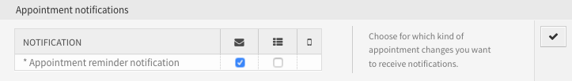

Időpont-értesítések¶
Az időpontok elmulasztása ronthatja az ügyfél megítélését Önnel szemben. Amikor egy időpont van hozzárendelve a naptárban, akkor az várható el, hogy értesítést kapjon:
- Egy új vagy megváltozott eseményről
- Egy esemény lemondásáról
- Az esemény előtt, értesítésként
Az értesítés mentesíti az ügyintézőt a fejben nyomon követett időpontok stresszétől.
Az OTRS időpont-értesítései kielégítik ezt az igényt. Itt egy adminisztrátor egyszerűen beállíthat értesítéseket általános szabályokkal, beleértve az aktiváló eseményeket és szűrőket. Ezután az időpontok megfelelőek lesznek ahhoz, hogy a helyes felhasználót értesítsék a megfelelő időben.
Használja ezt a képernyőt, hogy időpont-értesítéseket adjon a rendszerhez. Egy friss OTRS telepítésben már alapértelmezetten hozzá van adva egy időpont emlékeztető értesítés. Az időpont-értesítés kezelésének képernyője a Kommunikáció és értesítések csoport Időpont-értesítések moduljában érhető el.

Időpont-értesítés kezelés képernyő
Időpont-értesítések kezelése¶
Egy időpont-értesítés hozzáadásához:
- Kattintson az Értesítés hozzáadása gombra a bal oldalsávban.
- Töltse ki a szükséges mezőket, ahogy az Időpont-értesítési beállítások szakaszban le van írva.
- Kattintson a Mentés gombra.
Egy időpont-értesítés szerkesztéséhez:
- Kattintson egy időpont-értesítésre az időpont-értesítések listájában.
- Módosítsa a mezőket, ahogy az Időpont-értesítési beállítások szakaszban le van írva.
- Kattintson a Mentés vagy Mentés és befejezés gombra.
Egy időpont-értesítés törléséhez:
- Kattintson a kuka ikonra az időpont-értesítések listájában.
- Kattintson a Megerősítés gombra.
Időpont-értesítés törlése képernyő
Az összes időpont-értesítés exportálásához:
- Kattintson az Értesítések exportálása gombra a bal oldalsávban.
- Válasszon egy helyet a számítógépén az
Export_Notification.ymlfájl mentéséhez.
Időpont-értesítések importálásához:
- Kattintson a Tallózás… gombra a bal oldalsávban.
- Válasszon egy előzőleg exportált
.ymlfájlt. - Kattintson a Felülírja a meglévő értesítéseket? jelölőnégyzetre, ha felül szeretné írni a meglévő értesítéseket.
- Kattintson az Értesítés beállítások importálása gombra.
Időpont-értesítési beállítások¶
A következő beállítások akkor érhetők el, ha hozzáadja vagy szerkeszti ezt az erőforrást. A csillaggal jelölt mezők kitöltése kötelező.
Lásd még
Példaként nézze meg az alapértelmezett időpont emlékeztető értesítést, amelyet egy friss OTRS telepítés tartalmaz.
Alapvető időpont-értesítési beállítások¶

Időpont-értesítési beállítások – alapvető beállítások
- Név *
- Ennek az erőforrásnak a neve. Bármilyen típusú karakter beírható ebbe a mezőbe, beleértve a nagybetűket és a szóközt is. A név megjelenik az áttekintő táblázatban.
- Megjegyzés
- Adjon további információkat ehhez az erőforráshoz. Mindig ajánlott egy teljes mondattal kitölteni ezt a mezőt az erőforrás leírásaként a jobb érthetőségért, mert a megjegyzés is megjelenik az áttekintő táblázatban.
- Megjelenítés az ügyintézői beállításokban
Határozza meg, hogy az értesítések hogyan jelenjenek meg az ügyintéző beállításaiban. A következő lehetőségek érhetők el:
- Nem
- Az értesítés nem lesz megjelenítve az ügyintéző beállításaiban. Az értesítés az összes megfelelő ügyintézőnek elküldésre kerül a meghatározott módszerrel.
- Igen
- Az értesítés meg lesz jelenítve az ügyintéző beállításaiban. Az ügyintézők kiválaszthatják vagy törölhetik a beállítást.
- Igen, de legalább egy aktív értesítési módszert igényel.
- Az értesítés meg lesz jelenítve az ügyintéző beállításaiban, de legalább egy bekapcsolt értesítési módszert igényel. Ezt a név mellett csillag magyarázza el.
Személyes időpont-értesítési beállítások
- Ügyintézői beállítások buboréksúgó
- Ez az üzenet egy buboréksúgóként lesz megjelenítve az ügyintézői beállítások képernyőn ennél az értesítésnél.
- Érvényesség *
- Állítsa be ennek az erőforrásnak az érvényességét. Minden erőforrás csak akkor használható az OTRS-ben, ha ez a mező érvényes értékre van állítva. Ennek a mezőnek az érvénytelen vagy átmenetileg érvénytelen értékre állításával letiltja az erőforrás használatát.
Időpontesemények¶
Időpont-értesítési beállítások – események
- Esemény
Itt választhatja ki, hogy mely események fogják aktiválni ezt az értesítést. Egy további időpontszűrő alkalmazható lent a csak egy bizonyos feltétellel rendelkező időpontoknál történő küldéshez.
A lehetséges események:
AppointmentCreate- Azután kerül végrehajtásra, ha egy időpontot létrehoztak.
AppointmentUpdate- Azután kerül végrehajtásra, ha egy időpontot frissítettek.
AppointmentDelete- Azután kerül végrehajtásra, ha egy időpontot töröltek.
AppointmentNotification- Ez egy különleges időpontesemény, amelyet az OTRS démon fog végrehajtani a megfelelő időben. Ha az időpont tartalmaz dátum és idő értéket az értesítésekhez, akkor amint az korábban bemutatásra került ebben a dokumentumban, és az adott értesítési dátumot elérte, az OTRS démon végrehajtja az ilyen fajta eseményt külön-külön minden egyes érintett időpontnál.
CalendarCreate- Azután kerül végrehajtásra, ha egy naptárat létrehoztak.
CalendarUpdate- Azután kerül végrehajtásra, ha egy naptárat frissítettek.
Időpont szűrő¶

Időpont-értesítési beállítások – időpontszűrő
Ez a felületei elem opcionálisan használható az időpontok listájának szűkítéséhez, ha azok illeszkednek a beállított értékekre:
- Naptár
- Annak kiválasztása, hogy a kapcsolódó időpontnak mely naptár részének kell lennie.
- Cím
- Szűrő az időpont címének egy részéhez vagy a teljes címhez.
- Hely
- Szűrő az időpont helyének egy részéhez vagy a teljes helyhez.
- Erőforrás
- Válasszon az időponthoz rendelt csapatok vagy erőforrások listájából.
Időpont-értesítés címzettjei¶
Időpont-értesítési beállítások – címzettek
- Küldés neki
Annak kiválasztása, hogy mely ügyintézőnek kell megkapnia az értesítéseket. A lehetséges értékek:
- Ügyintéző (erőforrások), aki az időponton belül ki lett jelölve
- Az összes ügyintéző, akiknek (legalább) olvasási jogosultságuk van az időpontokhoz (naptárhoz)
- Az összes ügyintéző, akiknek írási jogosultságuk van az időponthoz (naptárhoz)
- Küldés ezeknek az ügyintézőknek
- Egy vagy több ügyintéző választható ki, akiknek meg kell kapniuk az értesítéseket.
- Küldés az összes csoporttagnak (csak ügyintézőknek)
- Egy vagy több csoport választható ki, amely ügyintézőinek meg kell kapniuk az értesítéseket.
- Küldés az összes szereptagnak
- Egy vagy több szerep választható ki, amely ügyintézőinek meg kell kapniuk az értesítéseket.
- Küldés irodán kívüli állapotban
- Ha ez a lehetőség be van jelölve, az értesítés akkor is elküldésre kerül, ha az ügyintéző jelenleg irodán kívül van.
- Naponta egyszer
- A felhasználók értesítése csak egyszer egy nap egy önálló időpontról egy kiválasztott átvitel használatával. Ha ez az első értesítés egy időpontról, akkor az értesítés el lesz küldve. Ha már lett értesítés küldve korábban és ez a beállítás be van jelölve, akkor az OTRS démon ellenőrzi annak az idejét, amikor az utolsó értesítés el lett küldve. Ha nem lett értesítés küldve az elmúlt 24 órában, akkor az értesítés ismét elküldésre kerül.
Időpont-értesítés módszerei¶
Időpont-értesítési beállítások – értesítési módszerek
- Értesítési módszer engedélyezése
Ennek az értesítési módszernek az engedélyezése vagy letiltása. Egy értesítési módszer lehet e-mail, webnézet vagy SMS.
Megjegyzés
Az SMS értesítési módszer használatához a Felhőszolgáltatások engedélyezése szükséges.
- További címzett e-mail címek
- További címzettek adhatók meg itt. Használjon vesszőt vagy pontosvesszőt az e-mail címek elválasztásához.
- A bejegyzés látható az ügyfélnek
- Egy bejegyzés lesz létrehozva, ha az értesítés elküldésre került az ügyfélnek vagy egy további e-mail címre.
- E-mail sablon
Annak kiválasztása, hogy mely e-mail sablont kell használni az értesítésnél.
Megjegyzés
További e-mail sablonok adhatók hozzá egy
.ttfájl elhelyezésével az<OTRS_Home>/Kernel/Output/HTML/Templates/Standard/NotificationEvent/Email/mappába. Példaként nézze meg a meglévő e-mail sablonokat.- E-mail biztonság engedélyezése
Ennek a lehetőségnek a bejelölésével titkosítani fogja az értesítés e-mailjét.
Megjegyzés
A funkció használatához a PGP kulcsok vagy az S/MIME tanúsítványok engedélyezése szükséges.
- E-mail biztonsági szint
Ha az E-mail biztonság engedélyezése be van jelölve, akkor ez a beállítás aktiválva lesz. A következő lehetőségek érhetők el:
- Csak PGP aláírás
- Az értesítés e-mailjének csak aláírása PGP kulccsal. Ha nincsenek PGP kulcsok hozzáadva a rendszerhez, akkor ez a beállítás nem látható.
- Csak PGP titkosítás
- Az értesítés e-mailjének csak titkosítása PGP kulccsal. Ha nincsenek PGP kulcsok hozzáadva a rendszerhez, akkor ez a beállítás nem látható.
- PGP aláírás és titkosítás
- Az értesítés e-mailjének aláírása és titkosítása PGP kulccsal. Ha nincsenek PGP kulcsok hozzáadva a rendszerhez, akkor ez a beállítás nem látható.
- Csak S/MIME aláírás
- Az értesítés e-mailjének csak aláírása S/MIME tanúsítvánnyal. Ha nincsenek S/MIME tanúsítványok hozzáadva a rendszerhez, akkor ez a beállítás nem látható.
- Csak S/MIME titkosítás
- Az értesítés e-mailjének csak titkosítása S/MIME tanúsítvánnyal. Ha nincsenek S/MIME tanúsítványok hozzáadva a rendszerhez, akkor ez a beállítás nem látható.
- S/MIME aláírás és titkosítás
- Az értesítés e-mailjének aláírása és titkosítása S/MIME tanúsítvánnyal. Ha nincsenek S/MIME tanúsítványok hozzáadva a rendszerhez, akkor ez a beállítás nem látható.
Megjegyzés
A funkció használatához a PGP kulcsok vagy az S/MIME tanúsítványok engedélyezése szükséges.
- Ha az aláíró kulcs vagy tanúsítvány hiányzik
- Annak a módszernek a kiválasztása, amelyet akkor kell használni, ha aláíró kulcs vagy tanúsítvány hiányzik.
- Ha a titkosító kulcs vagy tanúsítvány hiányzik:
- Annak a módszernek a kiválasztása, amelyet akkor kell használni, ha titkosító kulcs vagy tanúsítvány hiányzik.
Időpont-értesítés szövege¶

Időpont-értesítési beállítások – értesítés szövege
Egy értesítés fő tartalma hozzáadható minden egyes nyelvhez honosított tárggyal és törzsszöveggel. Lehetőség van a statikus szövegtartalom és az OTRS intelligens címkék együttes használatára is.
- Tárgy *
- A honosított tárgy egy adott nyelvhez.
- Szöveg *
- A honosított törzsszöveg egy adott nyelvhez.
- Új értesítési nyelv hozzáadása
- Annak kiválasztása, hogy mely nyelveket kell hozzáadni a honosított értesítések létrehozásához. Az ügyintéző vagy az ügyfél nyelve lesz használva, amely az ügyfél vagy az ügyintéző beállításaiban található. Másodsorban a rendszer nyelve lesz kiválasztva. A tartaléknyelv minden esetben az angol.
Figyelem
Ha kitöröl egy nyelvet a DefaultUsedLanguages beállításból, amelyhez létezik egy értesítési szöveg itt, akkor az használhatatlanná teszi az értesítést. Ha egy nyelv nincs jelen vagy nem érhető el a rendszeren, akkor a megfelelő értesítési szöveg törölhető, ha többé nincs rá szükség.
Időpont-értesítési változók¶
A változók használata a szövegben lehetővé teszi az üzenetek személyre szabását. A változókat (vagy más néven OTRS címkéket) az OTRS ki fogja cserélni az üzenet előállításakor. Ezen erőforráshoz elérhető címketörzsek mind a hozzáadás, mind a szerkesztés képernyők alján megtalálhatók.

Időpont-értesítési változók
Például az <OTRS_APPOINTMENT_TITLE[20]> változó a cím első 20 karakterét jeleníti meg, ha valami ilyesmit ad meg a sablonban:
Title: <OTRS_APPOINTMENT_TITLE[20]>
Ez a címke például ezt fogja megjeleníteni:
Title: Daily meeting in the…